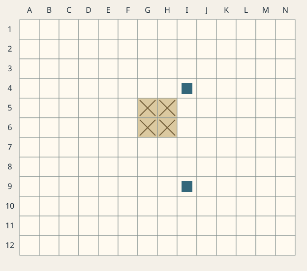

Одинаковые правила, разная история
Все карты совпадают с сеткой нативного пакета: 14 × 12, клетка — 5 футов. G5/H5/G6/H6 — трудная местность; I4/I9 — половинное укрытие. Остальные детали описания декоративны, пока ведущий не изменил поле штатно.
Расстановка и параметры
Герои в порядке списка встречи: B3, B4, B5, B6, C3, C4, C5, C6. Противники: L3, L4, L5, L6, M3, M4. Используйте только нужное число фигур.
Для 3 / 4 / 5 / 6 / 7 / 8 игроков: 2 / 3 / 3 / 4 / 5 / 6 противников, здоровье каждого 12 / 14 / 16 / 18 / 20 / 22. Защита 12; скорость 20 футов; одна ближняя атака +3, 1d4+1 дробящего урона, досягаемость 5 футов.
Перед запуском встречи герои должны находиться в её локации. После сыгранного перехода ведущий перемещает участвующих персонажей обычным действием приложения; герои в других местах автоматически в бой не попадают.
Враги — простая поддерживаемая модель. Мирные решения и ограничения сцены описаны отдельно; ведущий подтверждает их результат. После первого раунда напомните пути переговоров или отступления. Встречи не запускаются автоматически.
Меловые козы на солнечной полке
Только по согласию стола в четвёртой встрече вместо части примерки: любопытные домашние козы поднялись к сухой ткани и мешают перенести пустые сундуки. Если герои не хотят столкновения, Арк закрывает ткань, и пастух уводит коз позже без потери улик.
Цель и выходы
Освободить один согласованный проход для людей и пустого сундука, не загоняя животных к краю. Герои могут отступить на крыльцо и оставить верхний участок закрытым; победа над всеми противниками не нужна.
Спрятать ткань и позвать знакомого пастуха, положить принесённый им корм в огороженном дворе или медленно открыть животным широкий путь обратно. Всё это доступно без успешного броска; желающие могут проверить Мудрость (Уход за животными), Сл 12, чтобы выбрать спокойную козу первой, при неудаче начинают с другой стороны. Необязательный бой не открывает секретов.
Поведение противников
Обычное упрямое животное с короткими рожками, серыми ушами и смешной полосой меловой пыли на носу. Не разумный тайный враг и не знак неблагодарности жителей.
Козы держатся возле ткани, отходят от открытого прохода к видимому корму и толкают только приблизившегося вплотную. Используйте обычные перемещения и одну ближнюю атаку +3, урон 1d4+1; КД 12. Не вводите сбрасывание с уступа, скрытые рывки или особые состояния. Прекращайте столкновение, когда путь свободен или герои отступили.
Размер группы
3 игрока: 2 козы по 12 хитов; 4: 3 по 14 хитов; 5: 3 по 16 хитов; 6: 4 по 18 хитов; 7: 5 по 20 хитов; 8: 6 по 22 хита. У всех КД 12 и одна атака +3 на 1d4+1. При 3–4 один герой освобождает путь, другие направляют; при 5–6 две группы работают у ткани и выхода; при 7–8 третья пара отмечает безопасную границу, не добавляя новых целей.


Сетка 14×12. В центре, клетки F5–I8, лежит неплотно сложенная ткань: труднопроходимая местность. Пустые сундуки на C4 и L8 дают укрытие по обычным правилам. Вход расположен на B6, широкий путь вниз — M6. Внешний край огорожен и не служит смертельной ловушкой; миниатюры показывают только согласованную площадку.
Чаши и камышовые гуси
Только по желанию игроков в пятой встрече вместо части переноски: обычные камышовые гуси выбрали тёплый пустой дворик и неохотно освобождают место для образцов. Водоисточник исправен, птицы не заражены и не управляются злодеем.
Цель и выходы
Доставить пустую пробную чашу к свободному краю двора или выбрать другое место опыта. Герои вправе оставить птицам двор до вечера и провести короткую пробу у входа; разгон всей стаи не требуется.
Рута предлагает оставить одну свободную чашу птицам у наружной стены и проводить опыт у другой. Можно дождаться, пока птицы уйдут на луг, либо медленно обойти их без сближения; сведения об уклоне доступны на переносном образце. Мудрость (Уход за животными), Сл 12, по желанию помогает сразу выбрать спокойный обход; при неудаче путь увеличивают и не теряют чашу.
Поведение противников
Крупная белая птица с зелёным отливом крыльев, уверенной походкой и звонким возмущённым гоготом. Защищает удобное место отдыха, не проявляет скрытой чудовищности.
Гуси остаются возле выбранных чаш и отступают, если им дают широкий путь к наружному лугу. Используйте обычное движение и одну ближнюю атаку клювом +3, урон 1d4+1; КД 12. Не добавляйте захват, оглушение, болезнь или автоматическое падение. При уходе героев либо переносе опыта столкновение заканчивается.
Размер группы
3 игрока: 2 гуся по 12 хитов; 4: 3 по 14 хитов; 5: 3 по 16 хитов; 6: 4 по 18 хитов; 7: 5 по 20 хитов; 8: 6 по 22 хита. КД 12, одна атака +3 на 1d4+1. При 3–4 все двигаются одной группой; при 5–6 одна пара готовит запасной опыт, остальные ведут чашу; при 7–8 добавьте равноправное наблюдение выхода и места птиц, а не обязательную вторую чашу.

Сетка 14×12. Центральный прямоугольник F5–I8 занят мелкими чашами и рыхлым тростником, это труднопроходимая местность без риска утонуть. Низкие каменные ящики на C4 и L8 дают укрытие. Подход находится на B6, запасное место опыта на M6; южный край открывается на луг, чтобы птицам оставалось куда уйти.
Добровольцы на тесном повороте
Только по прямому выбору стола в шестой встрече вместо расстановки дощечек. Веста или Минн приглашает согласившихся взрослых помощников провести учебный эпизод с мягкими тренировочными щитами. До начала все знают цель, слово остановки и право уйти.
Цель и выходы
Показать один рабочий путь для двух отмеченных деревянных колодок через двор, пока добровольцы изображают неудачно вставшую очередь. Достаточно провести колодки по очереди, договориться о свободной полосе либо остановить упражнение и выбрать меньший приём.
Перед началом или в любой момент герои могут попросить добровольцев перестроиться, показать план широкой полосы либо заменить людей дощечками. Проверка Харизмы (Убеждение), Сл 12, по желанию делает объяснение короче; при неудаче его показывают на плане. Упражнение не даёт права давить на настоящих посетителей и не требуется для признания маршрута.
Поведение противников
Совершеннолетний сосед в простой защитной одежде с тканевой ладонью на груди. Его участие явно добровольно; он не внедрённый враг и не судья достоинства жильцов.
Помощники держат обозначенную полосу и уступают место после прямого согласованного обращения или завершения упражнения. При выбранной тактической форме используют только обычное движение и одну тренировочную ближнюю атаку +3, урон 1d4+1; КД 12. хиты обозначают участие в учебной сцене; при достижении 0 участник сдаётся и отходит, без тяжёлой травмы. По слову остановки все прекращают действия немедленно.
Размер группы
3 игрока: 2 добровольца по 12 хитов; 4: 3 по 14 хитов; 5: 3 по 16 хитов; 6: 4 по 18 хитов; 7: 5 по 20 хитов; 8: 6 по 22 хита. КД 12, одна атака +3 на 1d4+1. При 3–4 роли проводника, переговорщика и наблюдателя меняются; при 5–6 две пары показывают пути; при 7–8 каждый получает отдельное действие до следующего хода группы, без обязательного командира.

Сетка 14×12. В центре F5–I8 стоят переносные мягкие стойки: труднопроходимая местность. Закрытые пустые ящики на C4 и L8 дают укрытие. Начало пробы на B6, место завершения на M6, широкие боковые полосы остаются видимыми. Ни один выход не запирается; отказ от упражнения доступен с любой клетки.